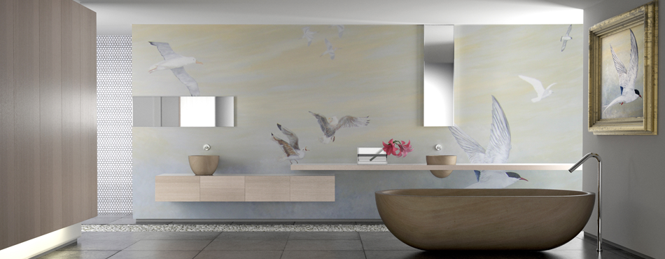
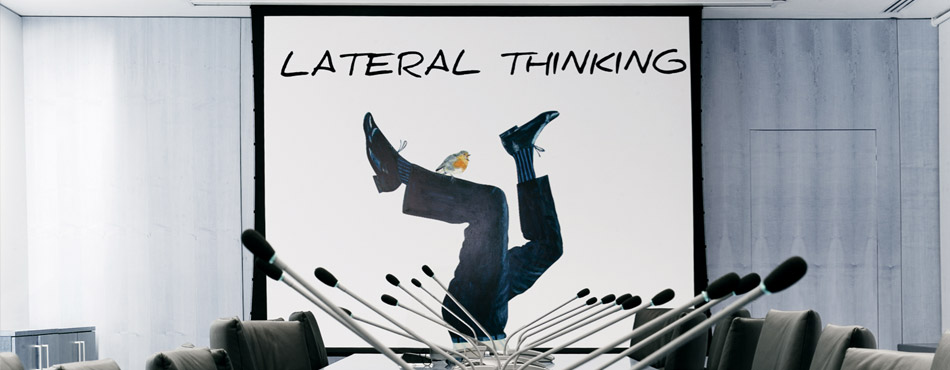
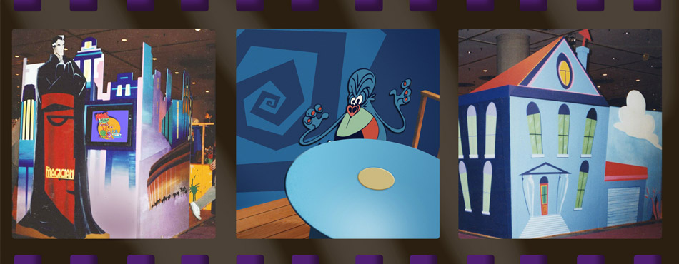

SALLE DE BAIN CONTEMPORAINE Le mur, 20 m2, est peint avec un ciel marin et des oiseaux de l'Océan Atlantique, réalisé en peinture acrylique et verni. Le Marais, Paris IVe.

TABLEAU 2m x 1.4m dont l'objectif est de détendre l'atmosphère avec humour, réalisée en peinture acrylique sur toile. Pour une salle de conférence d'une multinationale. Sloane Street, Londres SW1.

DECOR “Zinzins de l'espace“ réalisé à New-York dans le Javits Center pour les films Gaumont Multimedia en association avec ProSieben, Allemagne. Peint en acrylique sur MDF.